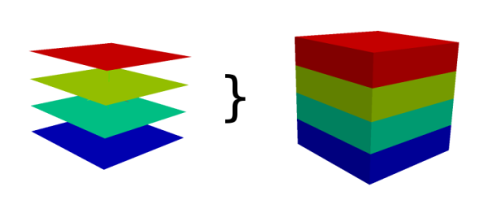

Converts 2D raster map(s) into one RASTER3D raster map.
If the 2d and 3d region settings are different,
the 2d resolution will be adjust to the 3d resolution.

How r.to.rast3 works
NOTES
Every 2D raster map is copied as one slice to the RASTER3D raster map. Slices
are counted from bottom to the top, so the bottom slice has to be number 1.
If fewer 2D raster maps are provided than depths, the last give 2D map is
used to fill up the RASTER3D slices to the top.
EXAMPLES
EXAMPLE 1
This example shows how to convert 6 maps into one 3d map with 6 layers.
# Mapset data in Location slovakia3d
r.to.rast3 input=prec_1,prec_2,prec_3,prec_4,prec_5,prec_6 output=new_3dmap
EXAMPLE 2
This example shows how to convert 3 maps into one 3d map with 6 layers.
# Mapset data in Location slovakia3d
r.to.rast3 input=prec_1,prec_2,prec_3 output=new_3dmap